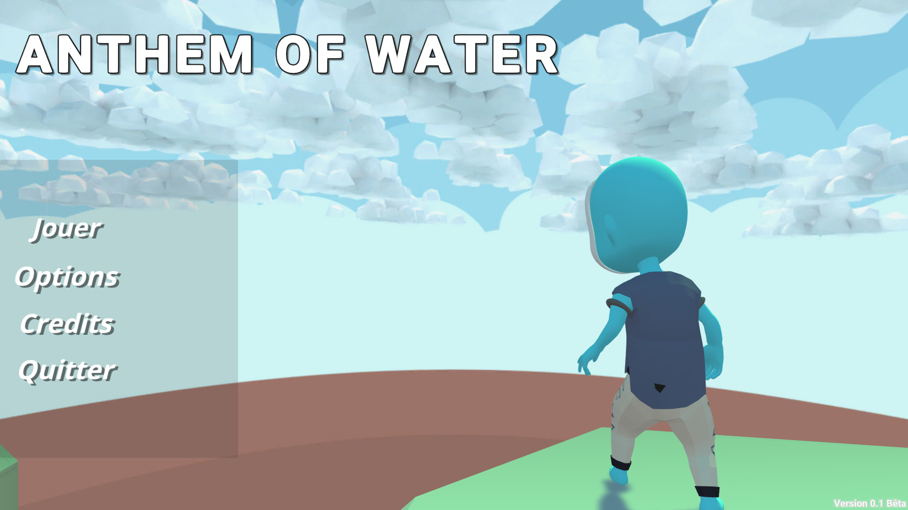
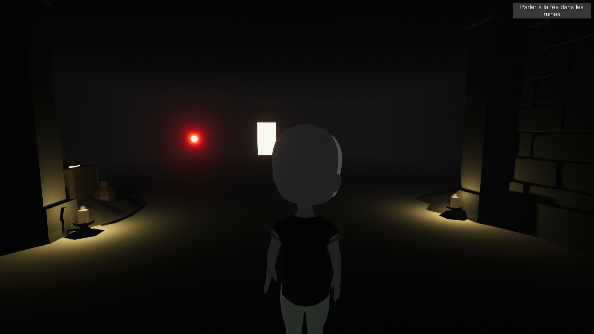
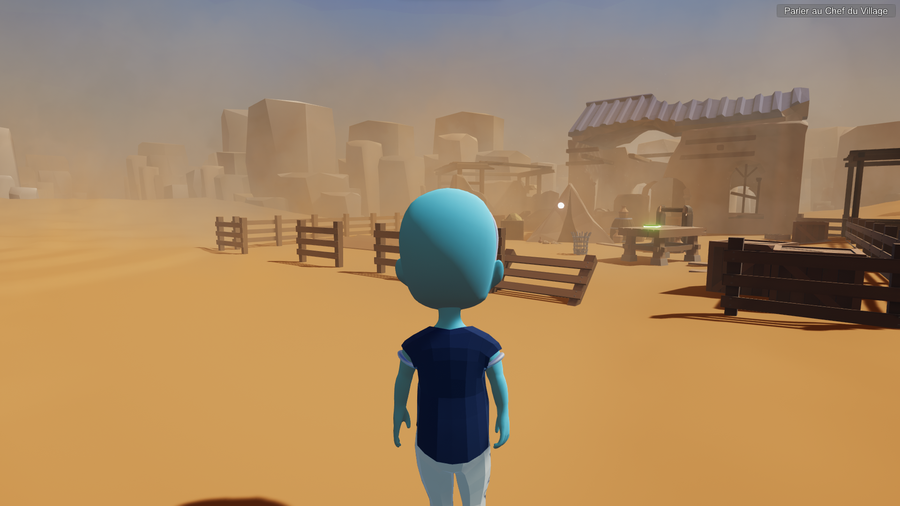
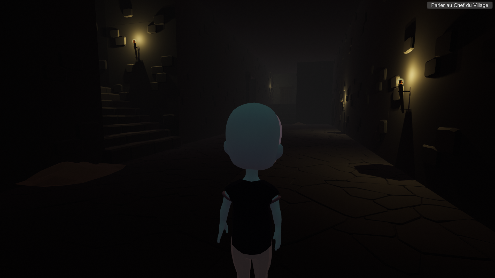

Ce projet a été réalisé dans le cadre d'un cours d'art et programmation informatique nécessitant l'utilisation de Unity. La thématique de l'anthropocène a été imposée, par conséquent j'ai choisi de réaliser un environnement virtuel sous la forme d'un RPG.
L'Anthropocène est une époque où l'Homme est au centre des changements sur Terre qui surpassent même les forces géophysiques. C'est l'une des nombreuses définitions que l'on peut trouver sur internet. Par ailleurs, l'ensemble de ces changements est généré par les conséquences de l'activité humaine : abus des ressources naturelles.
« Salutation petit être bleu. Que fais-tu ? Je ne pensais pas te trouver ici.
Aller, viens, tu as une mission qui t'attend.
Quoi ? Tu n'as toujours pas compris ce que c'était ?
Très bien, je vais te la répéter encore une fois mais n'oublie pas cette fois.
La Terre n'est plus ce qu'elle était, l'eau, source de vie principale, a presque entièrement disparu.
Il ne reste plus qu'une seule ville encore debout mais ses jours sont comptés. Toi seul peux la sauver.
Maintenant viens, nous avons de la route à faire... »
Images




